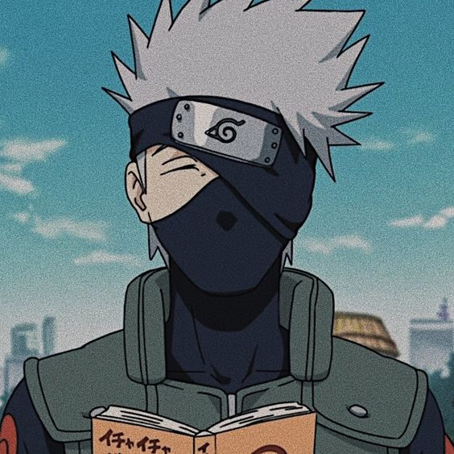
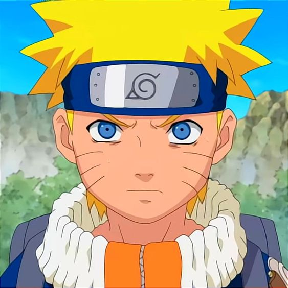
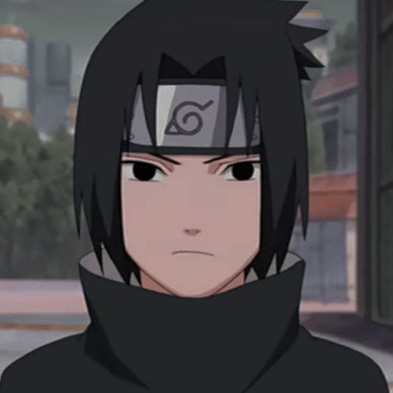
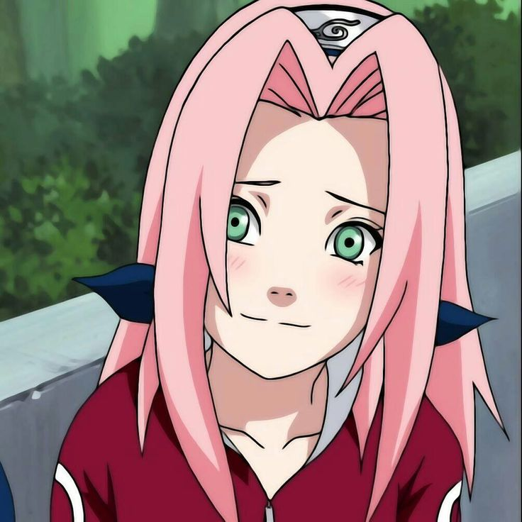

Naruto Uzumaki es un niño marginado en la aldea ninja en la que vive. En su interior reside el poder de una bestia que estuvo al borde de destruir el pueblo años atrás, el Kyubi, el zorro de nueve colas, lo que hace que nadie quiera acercarse a él por considerarlo maldito. Pese a su soledad y su tristeza, Naruto quiere ser un ninja, pero no uno cualquiera: quiere ser Hokage, el líder de la aldea. En su camino, sus convicciones atraerán a muchos amigos y compañeros de viaje.
   Serie de TV (2002-2007). 220 episodios. La historia transcurre en un mundo dominado por aldeas ninja. En las cuales el papel del ninja se traduce como el poder de cada país. Cada uno de estos cuenta con su aldea oculta que es donde estudian, entrenan, graduan y forman cada ninja. Los ninjas utilizan todo tipo de artes marciales desde la lucha cuerpo a cuerpo a ilusiones o técnicas secretas como por ejemplo la manipulación de elementos.
El protagonista es un joven aspirante a ninja Uzumaki Naruto, un muchacho que sueña en convertirse algun dia en el líder de su aldea (Hokage). Será para él una tarea difícil ya que cuando era solo un bebé le fué confiado en su interior el poder de un ser malvado, que antaño causo grandes males en su aldea (Konoha) y el cual irá poco a poco descubriendo y dominando. Por culpa de ese poder Naruto pasa una dura infancia con desprecio y negación por parte de los vecinos de su aldea... (FILMAFFINITY)